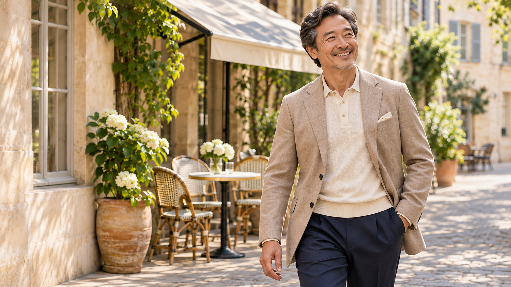
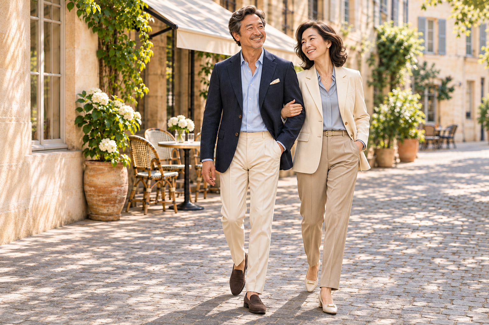
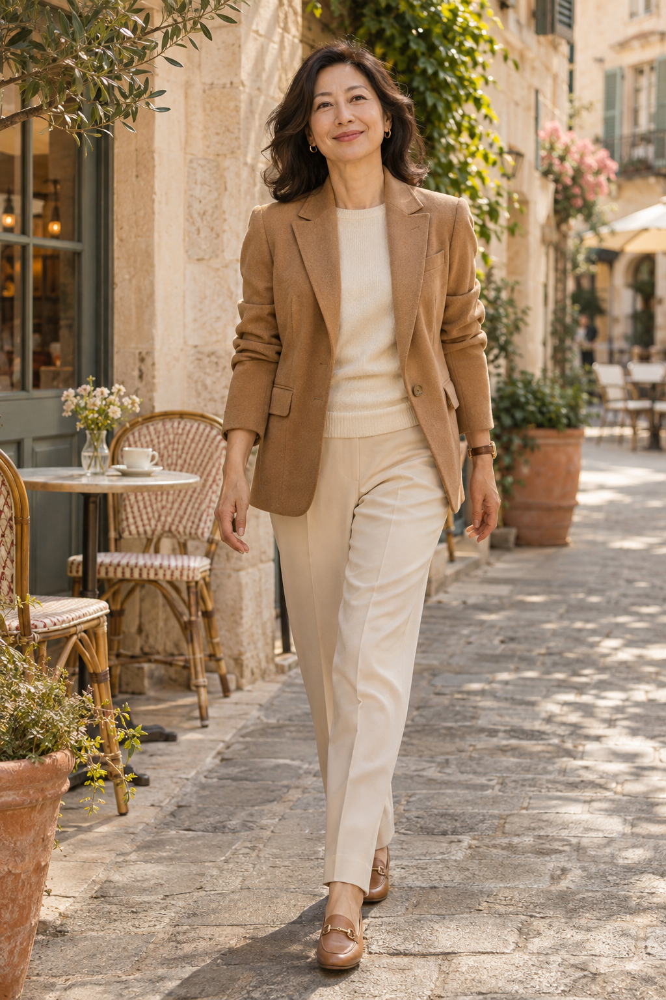

THE LAVENTO WAY
멋은 자연스럽게.
일상은 더 즐겁게.
익숙한 하루에도 새로운 기분이 필요하니까.
라벤토는 격식과 여유 사이, 당신만의 균형을 찾습니다.
편안한 니트에 가볍게 걸친 재킷, 산뜻한 색의 팬츠.
나이에 얽매이지 않는 감각으로 일상의 순간을 즐겨보세요.

THE LAVENTO WAY
익숙한 하루에도 새로운 기분이 필요하니까.
라벤토는 격식과 여유 사이, 당신만의 균형을 찾습니다.
편안한 니트에 가볍게 걸친 재킷, 산뜻한 색의 팬츠.
나이에 얽매이지 않는 감각으로 일상의 순간을 즐겨보세요.
STYLE EDIT
평범한 외출부터 특별한 모임까지.
당신의 하루를 위한 세 가지 제안.
스타일 제안을 위한 예시 이미지입니다. 실제 판매 상품·가격·구성은 확정 후 안내됩니다.

BETTER TOGETHER
나란히 걷는 거리, 함께 웃는 순간.
편안하면서도 단정한 스타일로
둘만의 평범한 하루를 특별하게.
THE WARM EDIT · WOMEN
부드러운 크림, 햇살을 닮은 카멜.
자연스러운 색의 조화로 완성하는
여유롭고 우아한 하루.
카멜 재킷에 아이보리 니트와 크림 팬츠를 더해보세요. 비슷한 온도의 색을 겹치면 편안하면서도 단정한 인상이 완성됩니다.
AI로 제작한 스타일 제안 이미지입니다.
여성복 판매 여부와 상품 구성은 확정되지 않았습니다.

DRESS FOR THE LIFE YOU ENJOY
커피 한 잔의 여유에도, 반가운 사람과의 만남에도.
일상 속 자연스러운 멋, LAVENTO.
MEET LAVENTO
매장 위치와 운영시간, 문의 방법을 준비하고 있습니다.
확정된 정보는 이곳에서 안내드리겠습니다.
현재는 브랜드와 스타일을 소개하는 페이지입니다. 판매 상품, 사이즈, 가격 및 상담·예약 서비스는 아직 확정되지 않았습니다.